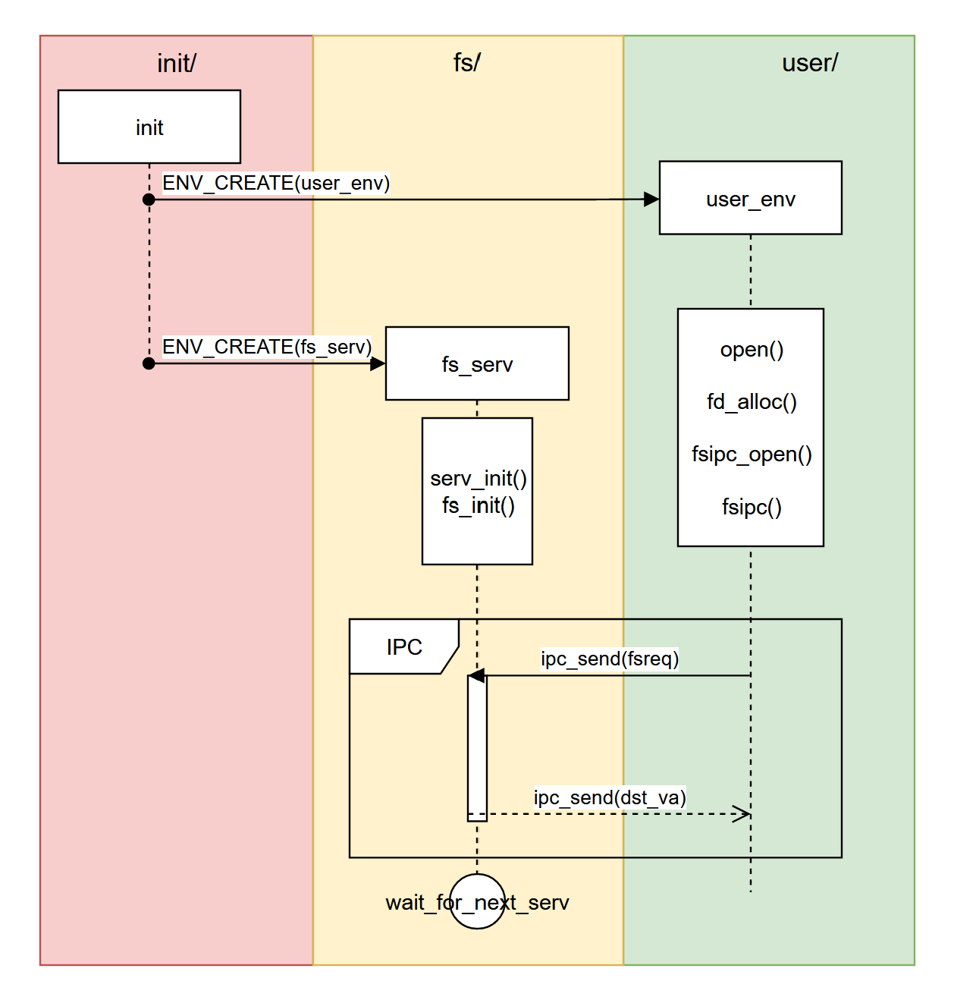

OS - Lab5
文件系统
课下
Lab5 实验报告
一. 思考题
Thinking 5.1
思考并回答下面的问题：
查阅资料，了解:
Linux/Unix的/proc文件系统是什么？有什么作用？
Windows操作系统又是如何实现这些功能的？proc文件系统这样的设计有什么好处和可以改进的地方？
答：
/proc文件系统是一个虚拟文件系统它将系统运行的状态的详细信息组织成一个虚拟文件系统的形式，通过它可以使用一种新的方法在
Linux内核空间和用户间之间进行通信；在/proc文件系统中，我们可以将对虚拟文件的读写作为与内核中实体进行通信的一种手段，具体能实现的功能包括读取系统数据、进程信息甚至修改系统参数等；但是与普通文件不同的是，这些虚拟文件的内容都是由内核动态创建的Windows系统一般通过Windows API即系统调用的方式返回系统的相关信息；但将这些系统信息打包提供给用户的方式更接近于WINDOWS的资源管理器
- 这样的设计简化了用户程序和内核空间的交互过程，更加方便快捷
Thinking 5.2
如果我们通过 kseg0 读写设备，我们对于设备的写入会缓存到 Cache 中
通过 kseg0 访问设备是一种错误的行为，在实际编写代码的时候这么做会引发不可预知的问题
请你思考：
这么做这会引起什么问题？
对于不同种类的设备（如我们提到的串口设备和
IDE磁盘）的操作会有差异吗？（可以从缓存的性质和缓存刷新的策略来考虑）
答：
引起问题：
会导致外部设备的数据与CPU获取的数据间可能不同步；对于其他地址空间的访存，都完全由CPU完成，这些地址空间中的值都是由CPU修改的，因而Cache可以保证数据访存的一致性；而外设对应的地址空间上的数据，会被外部设备自己更改，而此时CPU中的Cache仍缓存的旧数据在被访问时访问者便可能会得到错误的数据的，因而CPU只有通过直接读取这些外设地址上的信息才能保证时刻获得正确的数据对于写入操作：
- 在采用
Write-back刷新策略时，写入数据只有在Cache被换出时才会进行写回，会导致后面的操作覆盖了前面操作，最后相当于只进行最后一次操作；对串口设备，会导致只有Cache刷新后才能看到输出，且只能看到最后一个字符；类似的，会导致IDE磁盘可能只会写入最后一个扇区 - 但如果采用
Write-through策略进行刷新，CPU向Cache写入数据时，也会向内存相同地址写入相同的数据；这样就避免了上述问题，此时可以正常工作
- 在采用
对于读取操作：
任何一种策略都可能会读取到旧的、过时的数据，不能正常地工作
有区别，如终端串口设备是字符设备，则无需经过缓存，直接以字符（字节）为单位进行读写；而如
IDE磁盘设备等设备属于块设备，需要经过缓存并通过缓存的刷新访存相应的外设
Thinking 5.3
比较 MOS 操作系统的文件控制块和 Unix/Linux 操作系统的 inode 及相关概念，试述二者的不同之处。
答：
MOS操作系统的文件控制块：1
2
3
4
5
6
7
8
9
10struct File {
u_char f_name[MAXNAMELEN]; // 文件名字
u_int f_size; // 文件大小
u_int f_type; // 文件类型
u_int f_direct[NDIRECT]; // 文件直接指针
u_int f_indirect; // 文件间接指针
struct File *f_dir; // 指向文件所属的文件目录（当此文件控制块可用时）
u_char f_pad[BY2FILE - MAXNAMELEN - 4 - 4 - NDIRECT * 4 - 4 - 4]; // 为了让整数个文件结构体占用一个磁盘块，填充结构体中剩下的字节
};Unix/Linux操作系统的inode及相关概念：1
2
3
4
5
6
7
8
9
10
11
12
13
14
15
16
17
18
19
20
21
22
23
24
25
26
27
28
29
30struct m_inode {
unsigned short i_mode;/*文件类型和属性，ls查看的结果，比如drwx------*/
unsigned short i_uid;/*文件宿主id*/
unsigned long i_size;
unsigned long i_mtime;/*文件内容上一次变动的时间*/
unsigned char i_gid;/*groupid：宿主所在的组id*/
unsigned char i_nlinks; /*链接数：有多少个其他的文件夹链接到这里*/
unsigned short i_zone[9];/*文件映射的逻辑块号*/
/* these are in memory also */
struct task_struct * i_wait;/*等待该inode节点的进程队列*/
unsigned long i_atime;/*文件上一次打开的时间*/
unsigned long i_ctime;/*文件的inode上一次变动的时间*/
unsigned short i_dev;/*设备号*/
unsigned short i_num;
/* 多少个进程在使用这个inode*/
unsigned short i_count;
unsigned char i_lock;/*互斥锁*/
unsigned char i_dirt;
unsigned char i_pipe;
unsigned char i_mount;
unsigned char i_seek;
/*
数据是否是最新的，或者说有效的，
update代表数据的有效性，dirt代表文件是否需要回写,
比如写入文件的时候，a进程写入的时候，dirt是1，因为需要回写到硬盘，
但是数据是最新的，update是1，这时候b进程读取这个文件的时候，可以从
缓存里直接读取。
*/
unsigned char i_update;
};MOS系统对文件的操作是依靠进程间通信来完成的，而Linux系统是直接系统调用完成的；MOS系统的文件系统使用用户空间实现的行为降低了性能，但提高了可靠性
Thinking 5.4
查找代码中的相关定义，试回答一个磁盘块中最多能存储多少个文件控制块？一个目录下最多能有多少个文件？我们的文件系统支持的单个文件最大为 多大？
答：
- 一个磁盘块最多存储
16个文件控制块；单个文件最多有1024个指针，指向1024个磁盘块，所以一个目录下最多16384个文件。
Thinking 5.5
请思考，在满足磁盘块缓存的设计的前提下，我们实验使用的内核支持的最大磁盘大小是多少？
答：
1 | // fs/fs.h |
- 可见，我们实验使用的内核支持的最大磁盘大小为
DISKMAX(0x40000000 Bytes)，也就是1GB
Thinking 5.6
如果将 DISKMAX 改成 0xC0000000 ， 超过用户空间，我们的文件系统还能正常工作吗？为什么？
答：
不能
系统从
DISKMAP (0x10000000)开始映射缓存的硬盘块；缓存的硬盘块保存在serv.c这个用户内存空间里的，而serv.c进程会从FILEVA (0x60000000)开始，为Open结构分配空间，在DISKMAX大于0x50000000之后，映射的硬盘块就会覆盖掉Open结构进而可能出现潜在问题；而在DISKMAX大于0xB0000000，超过用户空间，就可能会导致文件控制进程试图访问内核数据，引发异常并panic，系统无法正常运行
Thinking 5.7
在 lab5 中， fs/fs.h 、 include/fs.h 等文件中出现了许多结构体和宏定义，写出你认为比较重要或难以理解的部分，并进行解释。
答：
见注释
fs/fs.h：1
2
3
4
5
6
7
8
9
10
11
12/* IDE disk number to look on for our file system */
/* Disk block n, when in memory, is mapped into the file system
* server's address space at DISKMAP+(n*BY2BLK). */
/* Maximum disk size we can handle (1GB) */include/fs.h1
2
3
4
5
6
7
8
9
10
11
12
13
14
15
16
17
18
19
20
21
22
23
24
25
26
27
28
29
30
31
32
33
34
35
36
37
38
39
40
41
42
43
44
45
46
47
48
49
50
51
52
53
54
55
56
57
58
59
60
61
62
63
64
65
66
67
68
69
70
71
72
73
74
75
76
77
78
79
80
81
82
83
84
85
86
87
88
89
90
91
92
93
94
95
96
97// See COPYRIGHT for copyright information.
// File nodes (both in-memory and on-disk)
// Bytes per file system block - same as page size
// Maximum size of a filename (a single path component), including null
// Maximum size of a complete pathname, including null
// Number of (direct) block pointers in a File descriptor
// 最大文件大小
// 文件控制块定义
struct File {
u_char f_name[MAXNAMELEN]; // 文件名字
u_int f_size; // 文件大小
u_int f_type; // 文件类型
u_int f_direct[NDIRECT]; // 文件直接指针
u_int f_indirect; // 文件间接指针
struct File *f_dir; // 指向文件所属的文件目录（当此文件控制块可用时）
u_char f_pad[BY2FILE - MAXNAMELEN - 4 - 4 - NDIRECT * 4 - 4 - 4]; // 为了让整数个文件结构体占用一个磁盘块，填充结构体中剩下的字节
};
// 每个文件数据块含有的文件数
// File types
// File system super-block (both in-memory and on-disk)
struct Super {
u_int s_magic; // Magic number: FS_MAGIC
u_int s_nblocks; // Total number of blocks on disk
struct File s_root; // Root directory node
};
// Definitions for requests from clients to file system
// 各种操作对应的标志数
struct Fsreq_open { // 打开文件
char req_path[MAXPATHLEN];
u_int req_omode;
};
struct Fsreq_map { // 定位文件
int req_fileid;
u_int req_offset;
};
struct Fsreq_set_size { // 改变文件大小
int req_fileid;
u_int req_size;
};
struct Fsreq_close { // 关闭文件
int req_fileid;
};
struct Fsreq_dirty { // 将文件标记为已修改
int req_fileid;
u_int req_offset;
};
struct Fsreq_remove { // 删除文件
u_char req_path[MAXPATHLEN];
};
Thinking 5.8
阅读 user/file.c ，你会发现很多函数中都会将一个 struct Fd* 型的 指针转换为 struct Filefd* 型的指针，请解释为什么这样的转换可行。
答：
user/file.c里的struct Fd *指针都是open函数执行所得的，而open函数调用了fsipc_open函数，并将一个struct Fd型指针的值发送给serv；serv会用ipc将fd指针的所在页映射上一个struct Filefd； 而Filefd的结构体中第一个结构体成员就是Fd结构体，所以一个处于Filefd结构体中的fd结构体的指针所指向的地址与其所处的Filefd结构体指针所指向的地址是相同的，因此可以直接进行这样的结构体指针的强制转化
Thinking 5.9
在 lab4 的实验中我们实现了极为重要的 fork 函数。那么 fork 前后的父子进程是否会共享文件描述符和定位指针呢？请在完成练习 5.8 和 5.9 的基础上编写一个程序进行验证。
答：
文件描述符和定位指针均存储在用户空间，因此
fork前后的父子进程会共享文件描述符和定位指针验证程序：
1
2
3
4
5
6
7
8
9
10
11
12
13
14
15
16
17
18
19
20
21
22
23
void test()
{
int r, fdnum, n;
char buf[200];
fdnum = open("/newmotd", O_RDWR | O_ALONE);
if ((r = fork()) == 0) {
n = read(fdnum, buf, 5);
writef("[child] buffer is \'%s\'\n", buf);
} else {
n = read(fdnum, buf, 5);
writef("[father] buffer is \'%s\'\n", buf);
}
while(1);
}
/* expected output:
====================================
[father] buffer is 'This '
[child] buffer is 'This '
====================================
*/
Thinking 5.10
- 请解释
Fd，Filefd，Open结构体及其各个域的作用。比如各个结构体会在哪些过程中被使用，是否对应磁盘上的物理实体还是单纯的内存数据等。说明形式自定，要求简洁明了，可大致勾勒出文件系统数据结构与物理实体的对应关系与设计框架。
答：
struct Fd定义在user/fd.h，是一个文件描述符结构，是库函数保存用户进程已打开文件使用的。fd_dev_id：打开文件的id，也就是该文件描述符对应的抽象文件的实际类型，指示了该文件所处的设备fd_offset：当前读/写的偏移值，也就是下一次操作从文件的哪个地方开始fd_omode：当前文件打开的模式（访问权限），只读/只写/读写等，可在判定操作是否合法时用。
struct Filefd定义在user/fd.h，是文件描述符与文件id与文件控制块的结构f_fd：一个文件描述符。f_fileid：对应于一个全局的文件编号，用来向文件系统请求服务。f_file：对应文件的文件控制块。
struct Open定义在fs/serv.c，是文件系统服务用来保存整个系统的已打开文件的结构。o_file：真实的，指向对应文件在硬盘块缓存上文件控制块的地址，用来对文件进行属性进行更改o_fileid：全局唯一的文件编号id，和struct Filefd里的f_fileid对应。o_mode：文件打开的模式，和struct Fd的fd_omode对应o_ff：文件读/写偏移量，即文件读/写当前位置
Thinking 5.11
UML时序图中有多种不同形式的箭头，请结合UML时序图的规范，解释这些不同箭头的差别，并思考我们的操作系统是如何实现对应类型的进程间通信的。
答：
UML时序图：
黑三角箭头且黑色实线，是同步消息
开三角箭头且黑色虚线，是返回消息
返回消息和同步消息结合使用；使用同步信息时，消息的发送者把进程控制传递给消息的接收者，然后暂停活动，等待消息接收者的返回消息
使用
IPC进行进程间通讯，具体函数为fsipc函数1
2
3
4
5
6
7
8static int
fsipc(u_int type, void *fsreq, u_int dstva, u_int *perm)
{
u_int whom;
// NOTEICE: Our file system no.1 process!
ipc_send(envs[1].env_id, type, (u_int)fsreq, PTE_V | PTE_R);
return ipc_recv(&whom, dstva, perm);
}
Thinking 5.12
- 阅读
serv.c/serve函数的代码，我们注意到函数中包含了一个死循环for (;;) {...}，为什么这段代码不会导致整个内核进入panic状态？
答：
- 该进程在调用
sys_ipc_recv时，会被设置为ENV_NOT_RUNNABLE并调用sys_yield主动让步，只有当其接收到了信息，才会被发送消息的一方重新设置位ENV_RUNNABLE转化为运行态；这种类似于wait-notify机制从而避免了忙等待，因而不会导致整个内核进入panic状态。
二. 实验难点：
了解文件系统的基本概念和作用
了解普通磁盘的基本结构和读写方式
了解实现设备驱动的方法
掌握并实现文件系统服务的基本操作
了解微内核的基本设计思想和结构
三. 体会与感想：
难度评价：
9/10实验用时：
10-12h， 撰写实验报告用时：8h体会与感想：
lab5实验所需阅读代码量较大，理解难度较高，完成的较为不顺利；但通过此次实验，我了解了文件系统的基本概念和作用及普通磁盘的基本结构和读写方式，通过实现设备驱动，掌握并实现了文件系统服务的基本操作；基本了解微内核的基本设计思想和结构；受益匪浅
课上
lab5-1-exam：
能通过基地址+偏移量的方式 访问外设 得到当前系统时间，并能完成对一块 新建磁盘的写入和读取 ；熟练使用课下的 ide_write 和 ide_read 即可（lab5-1 也大致只有这俩函数）
lab5-1-Extra：
实现一个 类 RAID4 磁盘阵列 ，实现对四个数据磁盘和一个数据检验盘的带有检验和复原数据功能的实现；也是熟练使用课下的 ide_write 和 ide_read 即可
lab5-2-exam:
实现以 O_APPEND / O_CREATE 的参数打开一个文件，并且实现打开文件时取消父子共享页面的 O_ALONE 参数功能；后两者需要改动的是 fs/serv.c 中的 serve_open 函数，而在题目中完全没有提示，导致花费了较久的时间
lab5-2-Extra:
实现 任意路径下的文件名遍历输出 ，对任意路径下的文件进行遍历并输出文件名；由于文件目录块的存在，因此直接用 open 打开并遍历即可，但是题目提示却是需要使用进程间通信，导致直接思考复杂度暴增并且最后都没做出来
by Tan